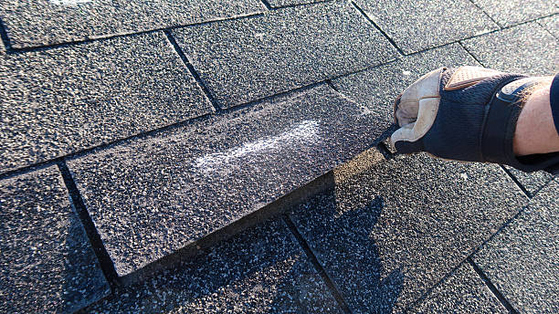
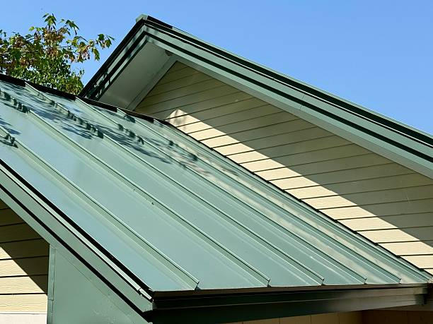

Commercial roofing built for tighter schedules and larger property demands.
Commercial roofing in Newark needs a stronger workflow because the roof affects operations, access, tenants, staff, and longer-term building planning all at once.
Offices and retail
Roofing that respects active use and the visible side of the property.
Warehouse and industrial
Bigger footprints and durability concerns call for stronger sequencing and scope control.
Mixed-use buildings
Projects where residential and commercial expectations often overlap in one place.
Commercial priorities
The roof plan has to work with the building, the schedule, and the people using the property.
Commercial roofing projects usually touch operations, access, appearance, and long-term maintenance planning. A stronger page should explain that broader picture, not just mention the service category.
Operational awareness
The work should make sense around delivery flow, staff access, customers, or building occupancy.
Longer-range planning
Commercial owners often need recommendations that connect today's work to future budget and property decisions.

Mid-page feature
A darker section gives the commercial page more presence and breaks up the layout well.
This is a strong place to talk about staging, property access, scheduling windows, and the way roofing work connects to day-to-day business operations.
Inspection and scope
Determine whether the roof needs repair, targeted correction, or broader replacement planning.
Building coordination
Account for entrances, work zones, timing expectations, and daily business flow.
Property value support
Commercial roofing decisions often affect appearance, durability, and investor confidence too.
Questions this page can answer
Commercial roofing questions that deserve more space.
How disruptive will the work feel?
The answer depends on roof size, access points, staging, and how active the building stays during the project.
Is repair still practical?
Some commercial roofs still support repair, while others benefit more from a broader replacement strategy.
How should ownership compare options?
A stronger page helps frame short-term cost, long-term value, and operational effect together.
Which buildings fit this service?
Office, retail, warehouse, light industrial, and mixed-use properties can all fall under this category.

Next step
The right commercial roofing page should end with a clear next action.
If a building owner or manager is ready to ask questions about repair, replacement, or a broader roofing plan, the close of the page should feel complete and confident.
Talk About a Commercial Roof